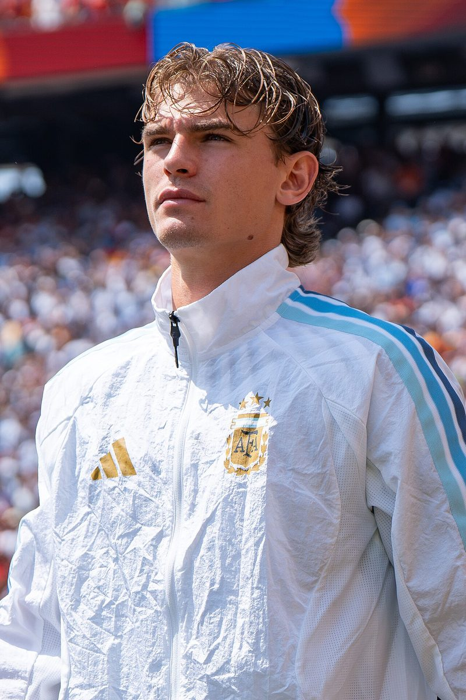

«Ланс» — «Комо» — 1:9: дебютанты Лиги чемпионов повторили самую крупную победу в истории турнира
В своем первом же сезоне в Лиге чемпионов «Комо» забил девять мячей на чужом поле: хет-трик на счету Тасоса Дувикаса, а Нико Пас отдал две голевые передачи. Команда поднялась на четвертое место в таблице.

Некоторые результаты перечитываешь дважды, просто чтобы убедиться, что тебе не показалось. «Ланс» — 1, «Комо» — 9 — как раз из таких.
В среду вечером, 4 ноября, «Комо» вышел на забитый до отказа стадион на севере Франции на матч четвертого тура Лиги чемпионов — и отгрузил сопернику девять голов. Напоминаем: это их первый сезон в главном еврокубке. К финальному свистку они повторили рекорд самой крупной победы в истории Лиги чемпионов.
Как ковались голы

Все началось быстро. Тасос Дувикас замкнул подачу Максимо Перроне с углового уже на шестой минуте, а чуть за полчаса до перерыва оформил дубль. Под конец первой половины игры Нико Пас довел счет до крупного, хладнокровно завершив контратаку ударом с левой.
Вторая сорокапятиминутка превратилась в настоящий потоп. Капитан Лукас Да Кунья отличился спустя две минуты после возобновления игры. Марк Оливер Кемпф головой забил пятый. На 57-й минуте Дувикас после проникающей передачи Паса оформил хет-трик, а еще через минуту Маттиа Либерали сделал счет 7:0. Рубен Агилар отыграл один мяч за «Ланс», но Мартин Батурино и Маттео Папаччоли, забивший уже в компенсированное время, довели дело до девятки.
Дувикас ушел с поля с тремя мячами. Пас записал на свой счет гол и две передачи — именно он дирижировал всей игрой «Комо».
Результат для учебников истории
По данным Al Jazeera, разница в восемь мячей повторяет рекордную победу в истории Лиги чемпионов — наряду с разгромами «Бешикташа» «Ливерпулем» (8:0) и «Мальме» «Реалом» (8:0). «Комо» стал первой командой с 1971 года, забившей девять голов на выезде в Кубке европейских чемпионов, и лишь вторым клубом после мюнхенской «Баварии», кому покорилась отметка в девять мячей в одном матче Лиги чемпионов.
Для «Комо» это третья победа в четырех матчах. Они идут на четвертом месте в таблице с девятью очками, имея в активе уже 19 забитых мячей в своем дебютном еврокубковом походе.
«Это сумасшедший вечер и безумный результат, но нам нельзя терять голову», — заявил после матча Да Кунья.
Маленький клуб в большой лиге
«Комо» — далеко не традиционный гранд европейского футбола. Клуб из живописного городка на озере на севере Италии проводит свой первый сезон в Лиге чемпионов. Проведя всего четыре матча, они забили больше голов, чем большинство матерых старожилов турнира.
Впереди еще четыре тура общего этапа, и «Комо» пока не гарантировал себе место в плей-офф. Но выездной разгром 9:1 в дебютном сезоне уже сделал их главным ньюсмейкером и сенсацией турнира.